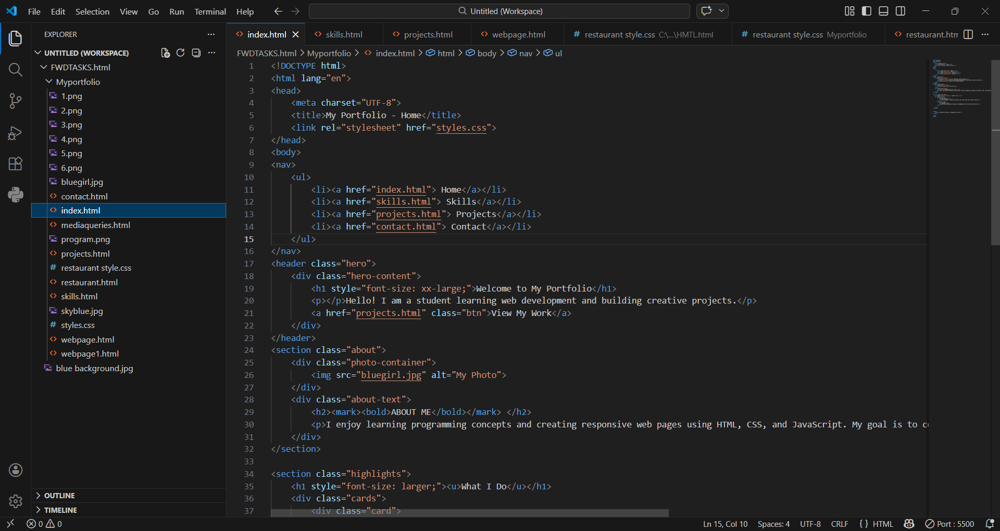
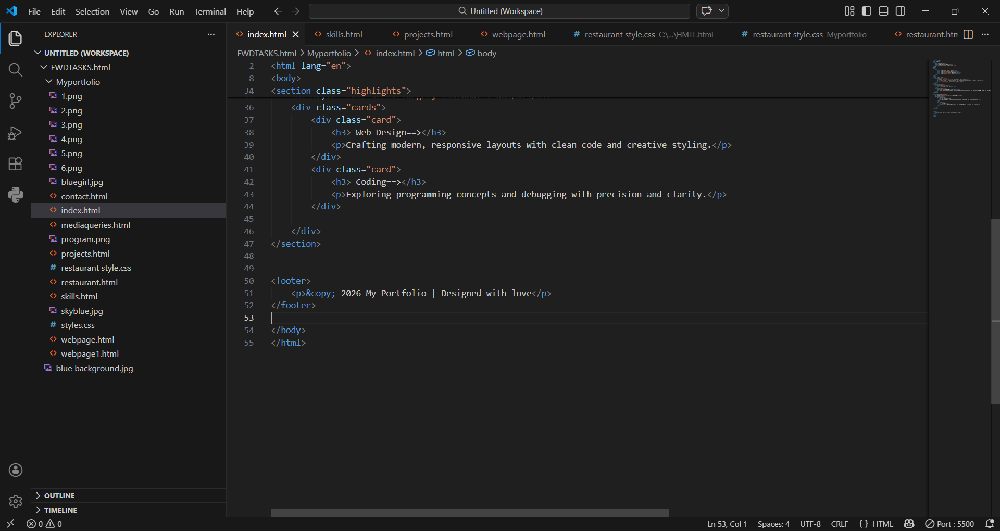

Brief Description - The navigation bar nav provides links to different pages: Home, Skills, Projects, and Contact. - The hero section header class="hero" welcomes visitors with a large heading, a short introduction, and a button linking to projects. - The about section section class="about" contains a photo and descriptive text about the user’s interests and goals. - The highlights section section class="highlights" showcases what the user does, with cards for Web Design and Coding. - The page ends with the closing /body and /html tags.

